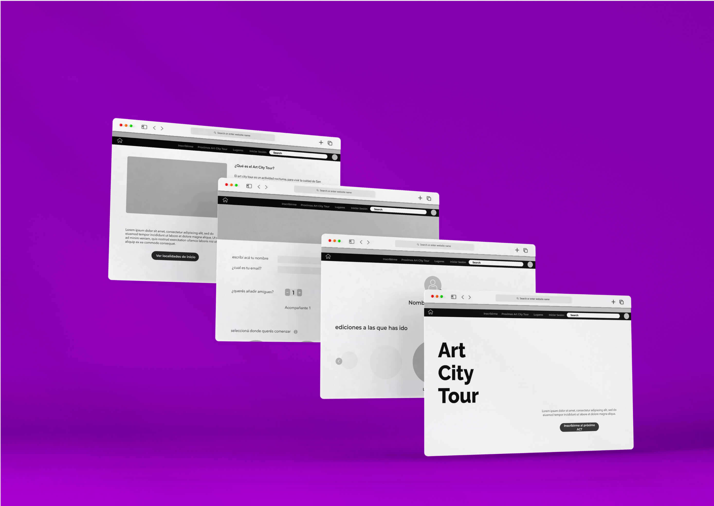
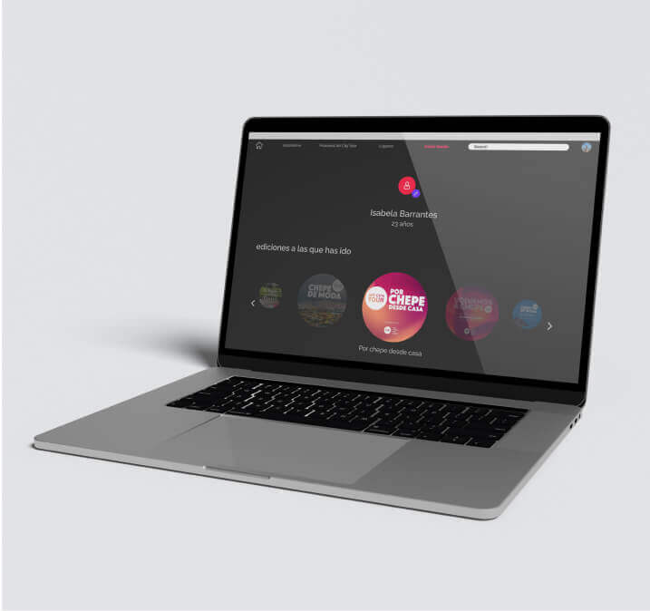
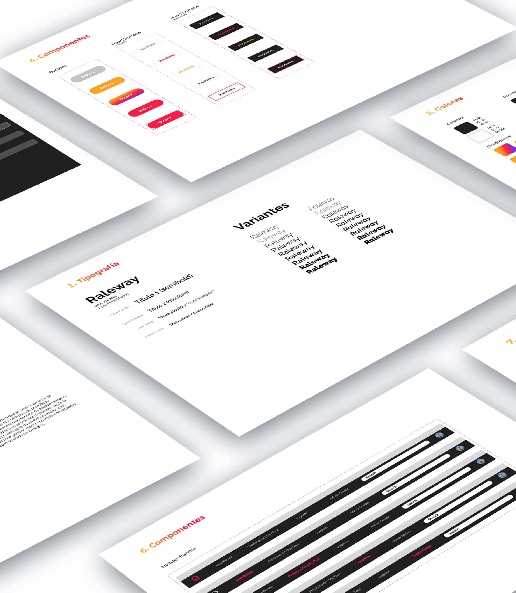
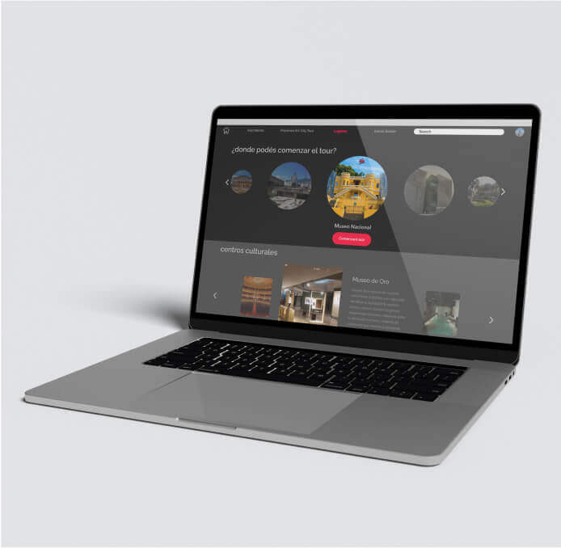
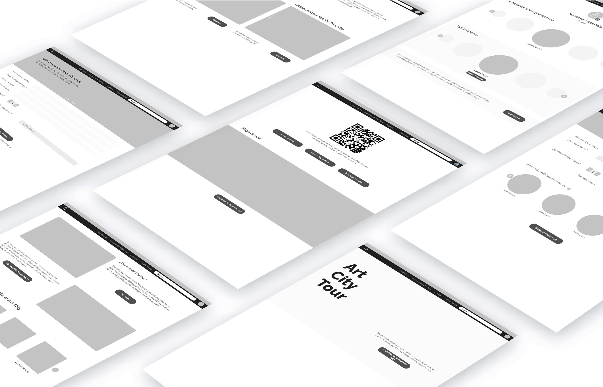
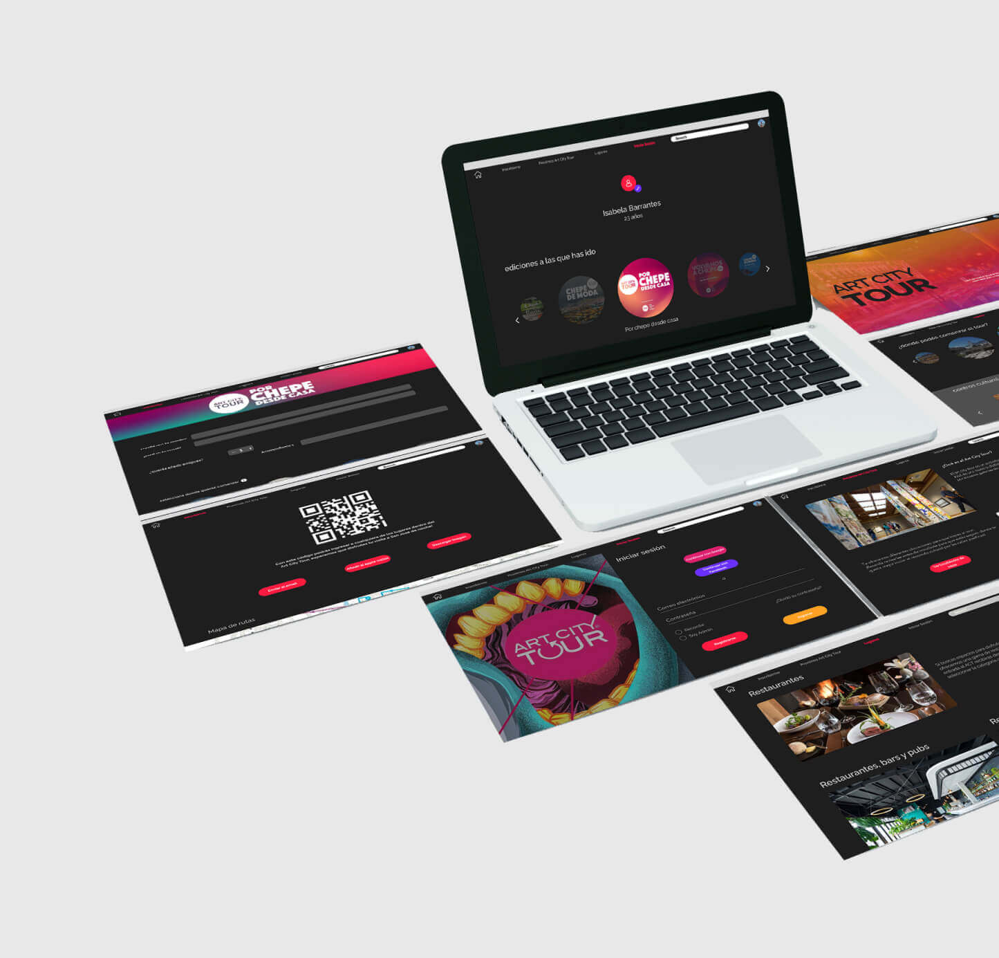

Art City Tour Website
The Art City Tour (ACT)
is an activity carried out every two months in which a night
tour of the city of san jose is given, specifically through
museums, galleries and cultural centers, in order to make known
the tourist offerings that the country has within the greater
metropolitan area. This tour is completely free for all who
participate in it, people just need to register beforehand. The
registration process was a meassure due to Covid-19 to assure
the maximum capacity of each cultural center wasn’t overpass.
Nevertheless, the administration of this event realized the
rehisstration process was being useful to catch the attention of
more people into the event, therefore this website was created
to inform the community as well as let them do the registration
process to assist.
Based on the project parameters
the website was developed prioritizing the function of informing
about the work the ACT creators are doing to improve the
cultural prticipation in the capital of Costa Rica and the
registration for the event itself. Color wise, the website uses
high saturation colors over a dark background, this because
after the reasearch made the team conclude this combination
creates a statement when it comes to cultural spaces such as
museums, specially since when coming into one, the lights are
not too intense in order to preserve the art pieces and focus
the users atention directly into the art and not the surroudings
of it. Colors bring joy and the feeling of fun to the
composition, at the time it increases the user attention and
interest on the event.
The website is optimized to guide users into
what’s more important for them specifically. The final product
was built after several usability tests to assure the website
was easy to use and understand.





